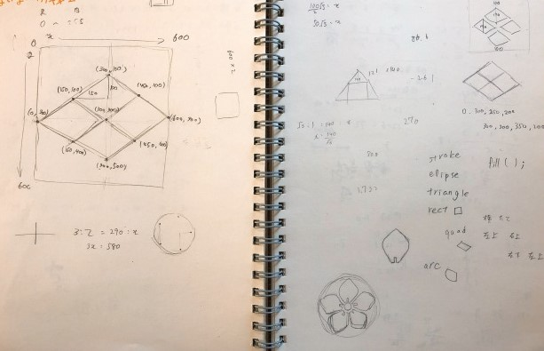
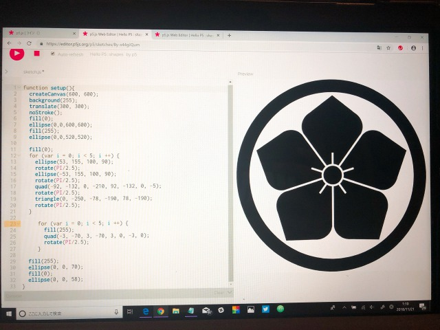

シンプルにしか使わなければ図形を描くだけのもので、もう少しいろいろ使えば マウスでなぞることで模様がつくなどができる。
p5.jsを簡易的に理解するためのメモ。左の家紋はシンプルなデザインなので初見で考えるのに 適していると考えやってみた
自分の家の家紋「桔梗」
実際に書いたものの写真
数学で言う図形を描くようなもので座標の計算をすること自体は楽しかった。 中心座標を考えながらそれぞれの形を5つずつ均等に配置すること自体に時間がかかった 省略するのに至るまで１つずつ書いていったが省略の方法がわかるまで本当に苦労したが、 省略の方法が分かれば一瞬でできあがったのでうれしかったけど、虚しかった。